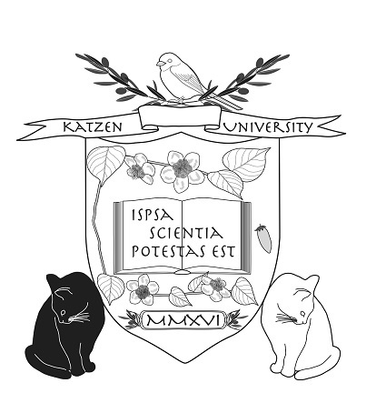
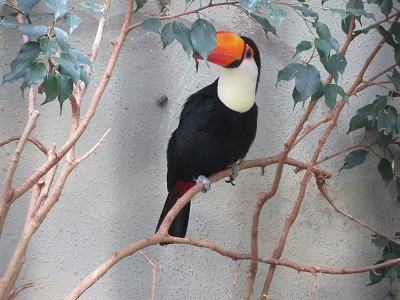

| シャムス教授の考古学入門 SECTION 2 (知は力なり！シリーズ) | |
| 三宅 美穂 | |
| etwas Neues (2016) | |
シャムス教授の考古学入門 SECTION 2
人類の進化

Vivat academia! vivat professores!
vivat membrum quodlibet!
vivant membra quaelibet!
semper sint in flore!
アカデーミア万歳！教授達万歳！
どの学生も万歳！
すべての友人も万歳！
彼らみな常に華の中にあれ！
考古学の世界へようこそ
過去に想いを馳せ、過去と対話する考古学。だれもが一度はなってみたいと思うあこがれの職業のひとつかもしれません。ただし、それは映画の中や物語の中でしか知らない職業でもあります。本書は実際に考古学に長年携わってきた方々による、考古学の魅力を伝える入門書です。
シリーズ「シャムス教授の考古学入門」はガイダンスと４冊（４セクション）からなります。各セクションを解説してくれるのはネコのシャムス教授です。シャムスとはアラビア語で太陽のこと。生まれながらに太陽のもとで発掘作業に携わる（！）教授の講義をお楽しみください。
現在、本講義では学生募集中です。ペットの写真と一緒に、シャムス教授への「考古学」に関する質問をお待ちしています。これは！という質問は、シャムス教授の回答つきで次号に掲載されます。
＊＊＊＊＊＊＊
SECTION 1を受講した方から質問がきています。
まずは、シェルさん（右）から。
教授はなぜ考古学の世界にどっぷりと入られたのですか？

ぼくが小学生の頃だったでしょうか、テレビで世界の遺跡と文化を紹介する番組があって、好きでよく見ていました。
「イースター島で発見された未解読の文字を読んで、モアイ像の文化を解き明かしたい」
と小学３年生のときの作文に書いているところを考えると、本当に興味があったんでしょうか。
小学3年生のころ
ぼくには兄がいますが、中学生のとき、同じような番組を見ていたぼくに、それは考古学だと教えてくれ、シュリーマンの『古代への情熱』という本をプレゼントしてくれました。シュリーマンは、19世紀のドイツの実業家・考古学者で、トルコのトロイ遺跡を発掘しました。彼の発掘については、また、彼のこの自伝はのちに批判されることも多いのですが、読んだ当時は、ギリシア神話を信じ、努力をし、私財を投じて夢を追ったその人生に驚いたものです。
ただし、高校から大学に行くときは、物理学か考古学かで悩みましたが、結果から言えば、理系に行くには能力が足りなかったのです、トホホ、お恥ずかしい。西アジアの考古学を専門とする先生が在籍する大学に進学し、その先生に考古学を学ぶことができました。
あとは、楽しそうなことを選んでいたら、なんとなく考古学の世界に近いところをうろうろしていたという具合です。
本書 の質問とペットの写真はこちらまで：etwasneuesbooks@gmail.com
- この本は横書きでレイアウトされています。
- また、ご覧になる環境により、表示の差が認められることがあります。
- 本作品では、ルビが（ ）内に表示されています。
SECTION 2
考古学の世界－人類の進化－

カッツェン大学考古学研究所のシャムス教授
皆さん、こんにちは。『考古学の世界』第２回目の講義です。今回は、私たち人類の進化について概観してみようと思います。
「人類の進化も考古学の対象なの？」
と疑問に思われる方もいらっしゃるかもしれません。
「だいたい、先生は猫ですけど？」
はい、聞こえています。話がややこしくなるので、そこは深く追求しないでください。
人類の進化を専門に研究するのは人類学なのですが、考古学は人間の営みを研究する学問ですから、私たちがどのような進化の過程をたどって今に至ったのかを知っておくことは、考古学を学ぶ上でもたいへん意味のあることだと思っています。そうした観点から、今回はこのテーマを取り上げることにしました。
徹夜明けでしてね
参考資料
その１「地図」

その２「年表」
人類の誕生
それでは、いくつか質問です。
チンパンジー、ゴリラ、オランウータン ― これらの動物は類人猿と呼ばれますが、この中で人類に最も近いのはどれでしょうか。
1
もしかして私たちってことはありませんかね
いえ、ありません
上にあげた類人猿も、君たちニホンザルも同じサルの仲間ですが、そう、君たちのようなしっぽのあるサルは、類人猿より少し遠い関係になってしまうようなんです。では、話を戻しますね。実は、この問題はたいへん長い間議論されてきました。というのも、人類がどこで誕生したのかという問題と深く関係しているからです。
チンパンジーとゴリラはアフリカに、オランウータンは東南アジアだけにしか生息していません。今も昔もそうだと考えられています。もし、人類に最も近いのがオランウータンであるならば、人類の故郷はアジアであった可能性が高くなります。
逆に、チンパンジー、ゴリラであるならば、アフリカで起源した可能性が高くなります。いちばん近い親戚が暮らしている場所で、人類も誕生したと考えられるからです。
ハルさん、聞いてますか？

♪♪♪
それでは、もうひとつの質問です。類人猿と人類との違いは何でしょうか。思いつくものをあげてみてください。
人間は毛が少ない？
人間はわたしらを飼いますわな
そうですね、ほかには？道具を使う、火を使う、ことばを話す、脳が大きい、二本足で立って歩く、絵を描く、笑う・・・。いいですね、たくさん出てきました。これらの中には、類人猿でも似たような特徴が観察されるものもありますが、やはりその程度や複雑性の点では、両者においてかなりの差が見られるものかもしれません。
それでは、このうち人類の進化の過程で一番早く現れたものはどれでしょうか。別の言い方をするならば、人類と類人猿を分けるものは何かということでもあります。
では質問の答えも交えながら、人類の起源についてみていきましょう。
遺伝子の解析によって、今では類人猿の中でも人類に最も近いのはチンパンジーであり、ゴリラとつづくことが分かっています。さらに、初期の人類の骨はアフリカからしか見つかっていないことから、人類がアフリカで誕生したのはほぼ間違いないと言えそうです。
ちなみに、進化論で有名なダーウィン（Charles Robert Darwin, 1809-1882）は、まだほとんど証拠がない中で、人類のアフリカ起源説を主張していました。さすがダーウィン、と言えるかもしれませんね。ん？ダーウィンを知らない？図書館へ行って、調べましょうね。
私がダーウィンです
それでは、チンパンジーと人類が分かれたのは、つまり人類が誕生したのはいつ頃のことなのでしょうか。
これについては、一番古い人類の骨から知ることができます。今のところ最古の人類はアフリカのチャドで発見されたサヘラントロプス・チャデンシス（Sahelanthropus tchadensis）で、その年代は700～600万年前と考えられています。
2
サヘラントロプス・チャデンシス・・・舌をかまないように
年代に幅があるのは、人骨が見つかった上と下の地層の年代に開きがあるためです。先ほどみなさんに指摘していただいた類人猿との違いの中にもありましたが、人類と類人猿とを分ける基準として直立二足歩行をするかどうかが注目されます。この、今のところ最古とされるチャドの骨の研究からも直立歩行の可能性が示唆されています。
ちなみに、アフリカ以外で人類の痕跡が見つかるようになるのは、180万年前以降ですので、人類は誕生してから500～400万年間はアフリカにとどまっていたことになります。脳の拡大や石器の使用などよりも直立二足歩行の方が早く現れているということです。要するに、直立二足歩行をするようになった類人猿を「人類」と呼び、区別しているようです。

１．人類はアフリカで起源した可能性が高い。
２．19世紀にイギリス人科学者チャールズ・ダーウィンが人類のアフリカ起源説を主張した。
３．アフリカのチャドで発見されたサヘラントロプス・チャデンシスが世界最古（700～600万年前）の人類と言われている。研究から、彼らは直立二足歩行の可能性がある。
４．アフリカ以外で人類の痕跡が見つかるようになるのは180万年前以降なので、人類は誕生してから500～400万年間はアフリカにとどまっていたことになる。
５．脳の拡大や石器の使用などよりも直立二足歩行の方が早く現れているため、直立二足歩行をするようになった類人猿を「人類」と呼び、区別している。
直立二足歩行の完成
実際には、直立二足歩行が完成するまでには、ある程度時間がかかったようです。まず、およそ450万年前に生きていたラミダス猿人（アルディピテクス・ラミダス, Ardipithecus ramidus）を紹介しましょう。
3
ラミダス猿人！
エチオピアから発見されたこの猿人は、ほぼ全身の骨格を復元できるほど、その骨がまとまって出土しました。これだけ古い時代の人骨が、全身そろった状態で見つかること自体、奇跡的ですね！灼熱のアフリカの大地に、それこそ這いつくばるようにして調査を続けた人たちの努力と熱意の賜物（たまもの）なのです。
ぼくなら毛が多くて耐えられませんね
ラミダス猿人は直立二足歩行をしてはいたものの、その足取りはまだたどたどしいものであったようです。骨から復元された足に注目すると、その形はチンパンジーのものに近く、まだ親指が自由に動くようになっていました。足でもうまくモノを掴（つか）むことができたということです。
4
すらっとした指です
何ですか？私も足で床に落ちた鉛筆をうまく拾えます！と？・・・ラミダス猿人の足は、そんなレベルではありません。早い話が、手が４つあると思ってください。そうだとしたら、木に登ったり木を伝って移動するのに便利だと思いませんか。実際、チンパンジーはそうして生活をしているわけですけれども。
ラミダス猿人の腰の骨にも注目しましょう。おもしろい形をしているのです。チンパンジーなど、類人猿の骨盤は縦長の形をしていますが、直立二足歩行をする人類の骨盤は横長になっています。骨盤を横長にすることで、頭や上半身の重みをうまく支えることができるようになるからだと考えられています。
ところが、ラミダス猿人の骨盤は上半分は横長になっていましたが、下半分は縦長のままと、両者の中間の形態をしています。
5
骨盤に注目
これらのことから、ラミダス猿人は完全に地上に適応していたわけではなく、まだ樹上の世界でも暮らしていくことができたと考えられています。人類に分類されてはいますが、類人猿と人類をつなぐ存在であると言えるでしょう。
400万年前ごろになると、エチオピアやケニアなどにおいてアファール猿人（アウストラロピテクス・アファレンシス, Australopithecus afarensis）が登場します。
6
あくまでも想像ですけどこんな顔（ウズベキスタンの切手）
中でも有名なのは「ルーシー」です。聞いたことがある？そうですか、確かテレビ番組などでも紹介されたことがあったかと思います。「ルーシー」も初期の人類としては珍しく、ほぼ全身に近い骨が発見され、女性であることも明らかになりました。
7
左から：アファール猿人、ホモ・エレクトス、ホモ・サピエンスの足の裏比較
発見したのはアメリカの人類学者ですが、アメリカ人は何にでもあだ名をつける傾向があるのでしょうか。ハリケーンや都市にも愛称がありますものね。ちなみに、このかわいらしい「ルーシー」という名前は、調査のときに聞いていたビートルズの歌に因（ちな）んだものとのことです。
♪ル～シ～、イン・ザ・スカ～イ、ウィズ・ダ～イヤモン♪
失礼しました、えっ？ビートルズなんて知らない？むむっ、そうですか、残念。では、話を元に戻しましょう。アファール猿人は、もはやしっかりと直立二足歩行に適応した体になっていました。足の形は今の人間のものにだいぶ近く、「土踏まず」もありました。お釈迦さまは偏平足だったようですが、悟りを開けない多くの凡人には「土踏まず」があります。
ほんまでっか
これは足の指の骨がアーチ状に組み合わされているからで、直立二足歩行をする上で足にかかる負担を軽くするための工夫だと考えられています。骨盤も、もはや全体が横長の形になっています。
タンザニアのラエトリという場所からは、アファール猿人のものと考えられている足跡も発見されています。360万年も前の足跡が残っているのです。すごいことですよね。しかも、それを見つけることができたのですからなおさらです。ちょうど火山灰がセメントのような役割を果たして、奇跡的にこの足跡を残してくれたのです。
ぴかぴかの床に足跡残すのって好きです！
足跡の様子を詳しく研究したところ、彼らが今の人間とほぼ同じような歩き方をしていたことが分かりました。つまり、踵（かかと）から地面に着き、体重を移動させて親指で地面を蹴っていたのです。ということは、直立二足歩行はラミダス猿人からアファール猿人への進化の過程で完成したということになりますね。
１．エチオピアで発見されたラミダス猿人（450万年前）は直立二足歩行をしていた。足の形はチンパンジーのものに近く、親指が自由に動くようになっていたので足でもうまくモノをつかめた。
２．ラミダス猿人の腰の骨は、頭や上半身の重みを支えるため上半分は横長であるが、下半分は類人猿のように縦長の形をしている。そのことから、樹上の生活と地上の生活を行っていた可能性があるため、彼らは類人猿と人類をつなぐ存在である。
３．エチオピアやケニアで発見されたアファール猿人（400万年前）には「土踏まず」があった。土踏まずには直立二足歩行をする際に、足にかかる負担を軽くする役目がある。
４．アファール猿人は骨盤全体が横長の形になっていることから、直立二足歩行がラミダス猿人からアファール猿人への進化の過程で完成したと言える。
犬歯の退化
チンパンジーなどの類人猿と人類の違いの中で、もうひとつ注目されているものに犬歯があります。犬歯が発達したものが牙ですが、チンパンジーの雄には大きくて鋭い犬歯があります。
ほな、お見せしましょ
いえ、結構
見てみて
はい、はい、歯をむかなくていいですよ、今日の皆さんは立派な犬歯をお持ちの方も多いですね。
でも、人間の皆さんの犬歯はどうですか？貧弱と言っていいほど、ほとんど目立ちませんよね。人類の犬歯は、すでにラミダス猿人の段階でその鋭さを失いつつあったことが分かりました。これは雄と雌の差が小さかったということでもあります。どう解釈すればいいのでしょうか。
ある人類学者は、メスを獲得するためにオス同士力づくで争うことが少なくなった結果ではないかと考えています。そして、人類はかなり初期のころからお互いに協力関係を築き、つまり弱肉強食ではなく
協力し合うこと＝社会性があった
のではないか、こうした協力し合う関係こそ、人類というものを進化させた役割をはたしたのではないか、と主張しています。
どうでしょうか。戦争や争いが絶えない現代社会の状況をみると、にわかには賛同しがたい部分もありますが、70億人もの人口規模がありながら、基本的には社会の秩序が保たれているというのは、やはり協力や助け合いの精神がないと難しいと言えるのかもしれません。
教授、ぼくたちは魚の取り合いしませんよね
いいから、歯しまいなさい
１．人類の犬歯は、すでにラミダス猿人の段階でその鋭さを失いつつあった。チンパンジーの雄の犬歯が大きいことから考えると、ラミダス猿人の雄と雌の差は小さかったということが分かる。
２．犬歯の退化が、メスを獲得するためにオス同士力づくで争うことが少なくなった結果であったとしたら、人類はかなり初期のころからお互いに協力関係を築くという社会性があった、と主張する学者もいる。
生き残るための適応戦略
アウストラロピテクス（Australopithecus, '南のサル'という意味）属には、アファール猿人の他にも、いくつかのタイプが存在していました。アファール猿人の次の段階になると、２つのタイプの人類が注目されます。
一方は「頑丈型」、もう一方は「華奢型」と呼ばれます。
「頑丈型」人類は、歯が異様に大きく、噛むために必要な筋肉も驚異的に発達していました。その筋肉を支えるため、頭蓋骨の頂上部には「鶏冠（とさか）」のような骨まで発達していました。その頭蓋骨を見ると、かなり怖そうな感じがします。しかし、そのいかつい外見とは反対に、彼らはベジタリアンだったと考えられています。今まで硬くて食べられなかったものまで食料にできるよう、特に噛む力を発達させる戦略を採用したようです。
噛むのは得意やがな
一方、「華奢型」人類の方は脳を大きくする方向へと進化し、道具を使用しながら、環境に適応しようとしたグループだったと考えられています。そして、このグループこそホモ属へとつながっていったのだと考えられています。最初のホモ属であるホモ・ハビリス（Homo habilis）は250万年前ごろに登場し、はじめて石器を使用した人類でした。
8
がんばって大きくしました
このように、両者が採用した戦略は全く異なるものでしたが、どちらの戦略ともある程度はうまくいったようです。「頑丈型」人類は最終的には絶滅してしまいますが、百数十万年前まで生き延びていたことが分かっています。一方、「華奢型」の方はホモ・ハビリス、ホモ・エレクトス（Homo erectus）と順調に進化を遂げ、最終的にホモ・サピエンス（Homo sapiens, '賢い人間'という意味）として生き残ったわけです。
ようやく大詰めにきましたよ、ハルさん？
♪♪♪
１．「頑丈型」人類は、歯が大きく、噛むために必要な筋肉も驚異的に発達していた。
２．彼らはベジタリアンだったと考えられている。今まで硬くて食べられなかったものまで食料にできるよう、特に噛む力を発達させていった。
３．「華奢型」人類は、脳を大きくする方向へと進化し、道具を使用しながら環境に適応しようとした。このグループがホモ属へとつながっていったのだと考えられている。
４．最初のホモ属であるホモ・ハビリス（250万年前）は、はじめて石器を使用した人類だった。
５．「頑丈型」人類は、最終的には絶滅し、「華奢型」人類はホモ・ハビリス、ホモ・エレクトスと進化を遂げ、最終的にホモ・サピエンスとして生き残った。
出アフリカ
人類は故郷であるアフリカを長い間出ようとはしませんでした。居心地がたいへんよかったのかもしれませんし、出たくてもなかなか出られなかったのかもしれません。でも、ついにアフリカを旅立つ日がやって来ます。
それは『旧約聖書』の「出エジプト記」（イスラエル人がエジプトからパレスチナという祖先の地を目指して旅立つ内容です）になぞらえて「出アフリカ」と呼ばれています。
エジプトを出るときの有名なシーン
かつて人類学者たちは、100万年前ごろにホモ・エレクトス（Homo erectus）が「出アフリカ」を成し遂げたと考えていました。当時は、アフリカ以外で見つかっていたいちばん古い遺跡が、100万年前ごろのものだったという事情もありました。また、ホモ・エレクトスは脳を大きく発達させ、ハンド・アックス（握斧）と呼ばれる万能型の洗練された石器も持っていました。
さらに、体つきも「現代人的プロポーション」に近づいたと言われるように、身長が高くなり、足も長くなっていました。これは長距離を移動するのにも適したものだったと考えられています。つまり、身体的にも文化的にも新しい環境に適応できる準備が整ったため、アフリカを出ることができたのだと説明されていたのです。
9
出ていくのは私です
なかなか説得力のある説明ですね
しかし、状況は変わります。1990年代にジョージア（旧グルジア）のドマニシ遺跡から180万年前の人骨が見つかり、人類がアフリカを旅立った年代が大幅に遡ることが明らかになったからです。しかも、単に年代が古くなっただけではありませんでした。見つかった人骨はホモ・エレクトスよりもむしろホモ・ハビリスに近く、脳もまだ十分には発達していませんでした。身長も低く、一緒に見つかった石器はハンド・アックスではなく、より古いタイプの石器であることも明らかになりました。
つまり、これまでの説明はどれも当てはまらなくなってしまったわけです。従来の学説は再検討を迫られているのですが、なぜこうした時期に、あまり準備が整わないうちにアフリカを出ることができたのか、なかなか有効な説明がなされていないのが現状です。
獲物おいかけているうちに出ちゃったんでしょうか、教授
１．かつて人類学者たちは、100万年前ごろにホモ・エレクトスが「出アフリカ」を成し遂げたと考えていた。
２．ホモ・エレクトスは脳を大きく発達させ、ハンド・アックスと呼ばれる万能型の洗練された石器を持ち、体つきが現代人のプロポーションに近かった。
３．ホモ・エレクトスは、身体的にも文化的にも新しい環境に適応できる準備が整ったため、アフリカを出ることができたのだと説明されていた。
４．1990年代にジョージア（旧グルジア）のドマニシ遺跡から180万年前の人骨が見つかり、人類がアフリカを旅立った年代が大幅に遡ることが明らかになった。
５．また、見つかった人骨はホモ・ハビリスに近く、脳もまだ十分には発達していなかったし、身長も低く、一緒に見つかった石器はハンド・アックスより古いタイプの石器であった。
新人類ホモ・エレクトス
「出アフリカ」を成し遂げたという栄誉は剥奪されてしまいましたが、ヨーロッパやアジアなどユーラシア大陸に広範囲に広がっていったのはホモ・エレクトス（Homo erectus）でした。
10
次は私です
アジアのホモ・エレクトスとしては、ジャワ原人（Homo erectus erectus）や北京原人（Homo erectus pekinensis）がよく知られています。「ピテカントロプス（Pithecanthropus）」という名はジャワ原人に対して与えられたものでしたが、その意味する'猿人'という範疇（はんちゅう）より、以後の研究によってホモ・エレクトスに属することが判明し、今ではあまり使われることがありません。
もはや「猿人」ではなく「原人」と呼ばれるように、大きな脳をもち「現代人的プロポーション」を獲得したホモ・エレクトスは新しい人類と呼ぶにふさわしいものです。
特に脳の大きさは、ホモ・エレクトスの段階で顕著に大きくなったことが知られています。逆に、それまでは人類の脳の大きさはほとんど変化がなかったと言うこともできます。
頭重いのはわたしもですわ
猿人の脳の大きさは400㏄程度で、チンパンジーとほとんど変わりがありませんでした。ところが、ホモ・ハビリスから大型化が始まり、ホモ・エレクトスでは1000㏄に近いものまで登場します。一気にこの時期に人類の脳は拡大したことが知られています。ちなみに現生人類では1400ccくらいが平均的な容量です。
脳という器官は、栄養の代謝という観点からするとたいへん贅沢な器官であると言われています。現代人を例にとると、その大きさは体の2%程度にすぎませんが、摂取しているエネルギーの20%以上を消費しているそうです。
論文を書くときにはかなりのエネルギーを消費しておりまして
スポーツカーのエンジンに例えられることがありますが、馬力があるが燃費が悪い ― 脳を大きくするのはそれほど簡単なことではないということです。大きな脳をもつには、それまで以上にたくさんの栄養を摂取するか、エネルギーの無駄をなくす必要があります。本格的な肉食の開始と脳の拡大の関係が議論されていますが、それは肉という質の良い栄養を恒常的に摂取することで、脳を大型化することができたと考えるのです。
もうひとつ、最近注目されているものに、「調理仮説」と呼ばれているものがあります。ホモ・エレクトスの遺跡からは、火を使用した痕跡が確認されています。ホモ・エレクトスの段階で生食ではなく、調理した食糧を食べるようになり、それが脳の拡大を可能にしたのではないかという考えです。
つまり、調理することにより 生食より消化に必要なエネルギーを減らせ、ひいては消化器官自体を縮小させ、その維持に関わるエネルギーを減少させることにつながり、脳に必要なエネルギーを確保できるようになったという理論です。
ぼくも生食よりカリカリが好きです
１．ホモ・エレクトスは、ヨーロッパやアジアなどユーラシア大陸に広範囲に広がっていった。
２．アジアのホモ・エレクトスでは、ジャワ原人や北京原人がいる。彼らは大きな脳をもち「現代人的プロポーション」を獲得した人類である。
３．脳の大きさは、ホモ・エレクトスの段階で顕著に大きくなった。猿人の脳の大きさが400㏄程度に対し、ホモ・エレクトスでは1000㏄に近いものまである。
４．大きな脳をもつには、それまで以上にたくさんの栄養を摂取するか、エネルギーの無駄をなくす必要があるので、本格的な肉食の開始が脳の拡大と関係していると考えられる。
５．火を使った痕跡から、ホモ・エレクトスは生食ではなく、調理をするようになり、それが脳の拡大を可能にしたのではないかという「調理仮説」がある。
ホモ・サピエンスの登場
現代人はホモ・サピエンス（Homo sapiens）と呼ばれます。かつては、旧大陸の各地に広がっていったホモ・エレクトスが、それぞれの地域でホモ・サピエンスに並行的に進化したと考えられていました。つまり、アジアのホモ・サピエンスはアジアのホモ・エレクトスから進化し、ヨーロッパのホモ・サピエンスはヨーロッパのホモ・エレクトスから進化したというのです。
こうした考えを「多地域進化説」といいます。しかし、1980年代にDNAの解析が始まり、人類進化の研究にも適用されるようになると、これまでの説に真っ向から対立するような見解が提出され、大論争が起こりました。
傍観していました
DNAの解析では、まず現代人のDNAが分析されました。女性にだけ受け継がれるミトコンドリアDNAを解析したところ、ホモ・サピエンスは約20万年前にアフリカで誕生したとの結果が報告されました。アフリカ系の人びとの間で遺伝子の多様性が最も顕著で、これはそれだけ長い歴史を持っていることを意味します。
最初のホモ・サピエンスは、『旧約聖書』に登場する神が創った最初の人間「アダムとイヴ」になぞらえて、象徴的に「ミトコンドリア・イヴ」と名付けられました。それまで言われてきたようにホモ・サピエンスは並行的に各地で進化したのではなく、アフリカで起源したのだと言うのです。これを「アフリカ単一起源説」といいます。つまり、各地のホモ・エレクトスではなく、アフリカでホモ・サピエンスに進化した人類が、アフリカから新たにもう一度、各地に進出したというわけです。
どっちなのかな
この両学説間での論争は、たいへん激しいものとなりました。それまでヨーロッパでは、ホモ・エレクトスからネアンデルタール人（ホモ・ネアンデルターレンシス）を経てホモ・サピエンス（クロマニヨン人）へと進化したと考えられていました。しかし、「アフリカ単一起源説」によれば、ネアンデルタール人とホモ・サピエンスとの間には直接の系統関係がないことになります。これを証明するためには、ネアンデルタール人のDNAを抽出して、ホモ・サピエンスのDNAと比べてみればよいことになります。
そこで、150年前にドイツのネアンデル渓谷から発見されていた、本家本元のネアンデルタール人の骨からDNAを抽出するプロジェクトが始動します。1990年代後半のことですが、この頃までには遺伝子解析技術も長足の進歩を遂げ、こんな夢物語のような話も現実味を帯びるまでになっていたのです。
そないな、もったいないことを
ネアンデル渓谷から見つかったネアンデルタール人骨は人類学の歴史にとってもたいへん貴重な資料ですが、大胆にも一部が切り取られて分析に提供されました。ホモ・サピエンスと比較したところ、全くの別系統であることが判明し、論争は終結することになったわけです。
ふぅ、たいへんでしたね
現在では、ホモ・エレクトスの進化型をホモ・ハイデルベルゲンシス（Homo heidelbergensis）と呼び（ヨーロッパ、アフリカでともに）、そこからネアンデルタール人とホモ・サピエンスが進化したと考えられています。乱暴な言い方になるかもしれませんが、ネアンデルタール人とホモ・サピエンスは親子関係にあったのではなく、兄弟だったということになります。一方、アジアへも、アフリカ起源のホモ・サピエンスが移住してきましたが、すでに存在していたホモ・エレクトスがその後どうなったのか、詳細は不明なままです。
ホモ・サピエンスはオーストラリア大陸に移住した最初の人類です。オーストラリア大陸に渡るには、その当時も海を渡らなければなりませんでした。ということは、ホモ・サピエンスはすでに航海技術を身につけていた可能性があります。
犬かきでもよろしいか？
さらに、高緯度地帯へも初めて進出を果たします。寒冷なシベリアの気候にも適応することができたホモ・サピエンスは、氷結していたベーリング海峡を渡ってアメリカ大陸に１万数千年前ころに移動し、あっという間にアメリカ大陸の南端にまで到達しています。
ホモ・サピエンスは、日本へも数万年前に渡って来ていますが、そのルートは主に３つ、そのうち北からの陸上ルートを除けば、やはり海を渡らなければならなかったと想定されています。
このように世界各地に拡散する間、おそらく別の人類と共存していた期間もあることでしょうが、現在は、人類はホモ・サピエンスだけが生存している状況になっています。
＊＊＊＊＊＊＊
今回は比較的様子がはっきりとしている人類、そしてそれら人類の関係についてさまざまな解釈のひとつを紹介したにすぎません。
類人猿や人類の古い骨の発掘は、アフリカを中心に各地で行われ、新たなものも発見され、新しい説も提唱されているようですが、その数はまだまだ少なく、全体像を詳細に描くには、これからの発見や研究に期待したいところです。
DNA分析のような、新たな研究手法も情報を引き出す有効な手段として、これからも発展していくことでしょう。ある日、ある発見に基づいて、これまでの説が大きく変わることもあるかもしれません。皆さんも、新聞やテレビなどで紹介される新しい情報を楽しみに注目していてください。

では、次の講義で。バイバイ
最新情報！！
みなさん、最新情報に注目です。2016年8月の終わりにおもしろい発表がありました。有名なイギリスの学術雑誌「Nature（ネイチャー）」に、アファール猿人のルーシーについての記事が載りました。そしてこのことは、日本の新聞でも取り上げられました。
猿人も木から落ちた？ 318万年前の化石 骨折判明
「ルーシー」の愛称で呼ばれる約318万年前のアファール猿人（アウストラロピテクス・アファレンシス）の化石人骨調査で、ルーシーは木から落ちて死亡した可能性があることが分かった。米テキサス大やエチオピア・アディスアベバ大のチームが30日、英科学誌ネイチャーで発表する。・・・（2016年8月30日朝日新聞より）
＊＊＊＊＊＊＊
ということで、アファール猿人である有名なルーシー、彼女がなぜ亡くなったのか、わかったかも？
3Dプリンターって、最近よく耳にする言葉ですね。これはものを立体的にスキャンし、その立体コピーを作る機械をいいます。なんとこの3Dスキャン技術を使って、ルーシーの貴重な、数百という小さな骨の破片が立体スキャンされ、その一部の立体コピーが作られました。それを詳細に観察することによって、彼女が死んだのは木から落ちたことが原因だった、という痕跡が骨に認められると主張されたのです。
調査チームは、この立体スキャンデータを一般に開放し（オリジナルの骨を所有するエチオピアによって公開が許可されているのは、今のところ、腕、肩、膝など一部分）、また、他の研究者たちが骨の立体コピーを作成し、この仮説を検証することを期待しています。
今回の研究によって、骨の破損部分細部の観察が可能となり、その結果、右上腕の先端の骨折箇所は落ちたときに衝撃をうけた場合のものとたいへん似ており、また、骨盤や肩、膝、足首に対する損傷も高い場所からの落下を推定させるものだということです。
つまり、ルーシーは、木の上から ― 10m以上の高さから落ちて、怪我したことにより死亡したというのです。
ルーシーがどれほど木の上での生活に適応していたのか、明確なところは分かりません。今回の調査チームは、ルーシーは敵に襲われないように木の上で眠りはしたものの、以前の人類ほど木の上では器用でなかったのだろうと考えています。
しかし、もちろん、この骨から推定された結果に異議を唱える学者もいます。
ある学者は、チンパンジーが木から落ちたときは脊椎に損傷を受ける傾向があり、ルーシーのそれは致命傷になるほどの傷を負っていないと語り、また、今回のような立体コピーや立体データ模型は役に立つかもしれないが、実物を見るに勝るものはない、とも語っています。
ほかにも、ルーシーの発見者である学者によると、発見時にすでに骨折はあり、それらは死後に起きたものであって、ルーシーに見られるような骨折は、他の人類の骨でもよくあるものだと主張しています。
まさに、これが研究の先端です。
ひとつ新たな発見があると、みんなで意見を出し合い、どの仮説が最も論理的に有効なのか、すべてのものから得られる証拠と符合するのか、正解を求めて研究を続けます。そして、検証が行われ、さらなる発見を加えながら、ひとつひとつの謎が解き明かされていきます。
次は、どんな発見があるのでしょうか、楽しみです
１．「多地域進化説」とは、旧大陸の各地に広がっていったホモ・エレクトスが、それぞれの地域でホモ・サピエンスに並行的に進化したという考えのこと。
２．女性にだけ受け継がれるミトコンドリアDNAを解析したところ、ホモ・サピエンスは約20万年前にアフリカで誕生したとの結果がでた。
３．「アフリカ単一起源説」は、ホモ・サピエンスは並行的に各地で進化したのではなく、アフリカでホモ・サピエンスに進化した人類が、アフリカから新たにもう一度、各地に進出したという考えのこと。
４．両説の間で論争が起こり、その決着を図るために、1990年後半、ネアンデルタール人のDNAを抽出して、ホモ・サピエンスのDNAと比べてみたところ、全くの別系統であることが判明した。
５．現在では、ホモ・エレクトスの進化型をホモ・ハイデルベルゲンシスと呼び、そこからネアンデルタール人とホモ・サピエンスが進化したと考えられている。
６．航海技術を持ち、寒冷な気候にも適応することができたホモ・サピエンスは、オーストラリア大陸やアメリカ大陸に１万数千年前ころに移動し、短期間のうちにアメリカ大陸の南端にまで到達している。日本へも海を渡ってきたルートが考えられる。
SECTION 1 質問コーナー
ん？なにか？
お忙しいところすみません。SECTION 1では考古学についていろいろと教えていただきましたが、一般の方々からの質問がいくつかありましたので・・・ひきつづき回答お願いします！
古生物学と考古学の違いは分かりましたけれど、考古学と歴史学はどう違うのでしょうか。
（ミセス・ノリコ）
ミセス・ノリコさん、考古学も歴史学の一部です
考古学は、歴史を紐解くさまざまなアプローチのひとつの方法・分野であり、遺跡や遺物を中心とした「もの」の調査、研究を通して、過去に何がどのように存在し、どう展開していったのか、を多角的に探っていきます。
歴史学は、主に文献資料を通して研究します。興味深いのは、アメリカでは、考古学は人類学の一部とみなされる傾向があることです。
人類学では、「なにがどう起こったのか」という事象そのものより、「それを引き起こした、もしくはそれに対処した人」に焦点をあて、「人がどのように存在し、どのような行動をしたのか」、その状況を解明しようとする視点で考古学が存在します。
今後、私の本を見つけるときには「歴史学」「考古学」というキーワードでよろしくお願いします、ミセス・ノリコさん！
古代エジプト人たちは発酵食品を食べていたとか、ビールを作っていたなどの話がありますが、それはどうやって証明できているのでしょうか？
（さっちゃん）
さっちゃんは古代エジプトやメソポタミアの展覧会に行ったことがありますか
パピルスや壁画、粘土板に記された文字、壁画や印章の図像、木製模型などによる作業風景から、当時の人たちがパンをこね、ビールを作り飲んでいた様子を知ることができます。ちなみにビールは壺からストローで飲んでいたようです。保存や風味付けに薬草やナツメヤシ、ハチミツも加えられました。
神話では、神々もビールを楽しんでいた場面が描かれています。ビールは日常的な飲み物であるとともに、神への奉納品でもあり、労働者への支払いとして賃金の一部になることもありました。一般には、酔うためのものというより、栄養価の高い飲み物として重要であったようです。
とは言っても、神への儀式において酔うために、やはりワインと同様にビールは饗宴（きょうえん）に供されるものでもありました。
おそらくパンにしてもビールにしても、現代のものと全く同じというわけではないでしょうが、ムギから作るこうした製品は、かなり古く、メソポタミアでは文字が登場する紀元前3200年ころには壺に「水」と「ムギ」が入った文字がすぐに現れることから、おそらく文字出現以前からパンや麦芽飲料は存在していたと想像されます。
なにせムギの利用はもっと古く、文字出現の約5000年も前のことなのですから・・・。
さっちゃん、これに関しては次号SECTION 3で詳しくお話します！

ぼくは夕方も涼しいと思うけど、発掘調査をする人たちはどうして朝しか働かないんですか。蚊が出てくるからですか。
（たくみ）
たくみくん、よい質問です
まず、西アジアでは夏は夕方も暑いんです。もちろん昼間よりはましですし、とても乾燥していますので、蚊はあまりいません。それでも、朝の時間帯が一番涼しく、その後の作業を考えても効率がいいんです。
SECTION 1 でもお話しましたが、発掘したものを宿舎に持ち帰り、洗って、乾して、翌日それぞれに札をつけて袋詰めします。
そう、夕方も働くんです。
発掘現場は、朝の５時には到着して作業を開始、８時には相当暑く、作業を終える昼の１時ころにはくらくらするほどの暑さになっていて、休憩を挟むと言っても、こうした炎天下で８時間は土を相手に掘る作業ですから、疲労困憊（ひろうこんぱい）します。
疲労困憊
シャワー、昼食、昼寝のあと、今お話ししたような遺物の袋詰め作業を夕方に行い、さらに、発掘現場で記録した図面の整理や遺物の整理、また発掘の様子を詳細に日誌として記録に残します。
発見された遺物でより詳細な記録が必要なものは、計測をして方眼紙上に一点ずつ図化します。
こうした作業を夕食をはさんで行いますので、寝るまで仕事が続きます。翌日の発掘に向けて、発掘会議も行います。大忙しです。
大忙しで・・・ぐー
ですが、夏の間だけの発掘、時間は限られていますので、できるかぎりの情報を得るために、「疲れた～」といいながら、わくわくして、毎日みんな頑張ります。
たくみくんも将来はぜひ、発掘調査に参加してみてください！

発掘でいろんなものが出てくるのは分かりましたが、出てきたものはどうするんですか。
（ゆうすけ）
ゆうすけくん、そう、毎日いっぱい出てきます
ぼくたちは毎日、さきほどたくみくんにお話したような作業をします。その後、とりあえずは、「出てきたもの」を発掘宿舎の倉庫に入れますが、発掘が終了すると、地元の博物館の倉庫で保存されます。より詳細な研究が必要なものは、現地の大学の専門家に預けたり、許可が降りれば、日本へ持ち帰り、科学分析などが行われます。
そう・・・膨大な量になりますので、博物館の倉庫にはぎゅうぎゅうに遺物が保管されています。実際には、博物館、大学、発掘宿舎などに分散されて保管、研究されています。
ゆうすけくん、この写真をみてください。なんだと思いますか？そうです。「出てきたもの（土器の破片）」です。トルコのある博物館が、「保管を兼ねて展示してしまえ！」と考えたら、こんなユニークな展示になりました。
おしゃれですね
ゆうすけくん、まずはお部屋の片づけで訓練を積んでください！
先生、もうひとつ質問があります。深くにいろいろ埋まっているということは、大むかしは地球が今より少し小さかったんですか？
（たくみ）
たくみくん、たしかにそう思っても不思議じゃないですね
でも、「もの」を埋めてしまう土はいったいどこから来るのでしょう。
・・・地球の外からはやって来ません。
たとえば、ここに「シャムス山」があるとしましょう。「シャムス山」は長い年月の間、風や雨、川などによって削られ、土になって、土地から土地へ運ばれて、昔の家などを覆って隠してしまうことがあります。「たくみ山」から運ばれてくる土が、さらにその上に積もっているかもしれません。
実は、この「土が積もる」という現象は、「下の土が、上に乗る土より古い」ということで、発掘において基礎になる大変重要なポイントです。下から出た「もの」は、上から出た「もの」より古いわけですから、その２つの順序が決まるのです。
たくみくん、さっきのお話とは逆に、風、雨、川などに削られて、地表面もしくはそれに近いほど浅い場所から古い「もの」が見つかることもあります。恐竜の骨でさえ、砂漠で地表に現れていることもあるくらいです。
「深いところに埋まって」いないこともあるんですね。
さて、セクション１でもお話しましたが、西アジアでは人びとが暮らした跡が積み重なって、遺跡が小山のようになることが多く見られます。
人びとが住んだ家が古くなって崩れる
↓
そのあとにまた家を建てる
↓
また、家が古くなって崩れる
↓
またまた、そのあとに家を建てる
（くりかえす）
というふうに、長い時間の中で、結果として作り上げられた山のようなものです。こうした発掘現場では深く埋まった「もの」も、実際は、この小山のまだまだ上の部分に埋まったものでしかないことも多くあります。なので、地球が小さかったのではなく、むしろ昔の人たちが地球上に築いた小山を発掘していくと考えてください。
このように、何十メートルもの高さになっている遺跡（遺丘といいます）も多くあります
たくみくん、今度はこの小山を丸ごとバースデーケーキだと想像してみてください。ケーキをたて（垂直）に切るのではなく、横（水平）に切ってみたらどうでしょう。間にはさまったフルーツがたくさんでてくるでしょう。
このように、小山を上から水平に、順々に、全体的に削って発掘調査ができれば理想的です。水平に、というのは、ひとつの時期を広い範囲で見ることができる、という意味になります。当時の建物や道路などの配置や関係、どのように空間を使っていたのかが分かるのです。
しかし、残念ながら、時間・労力・費用の点からもまず無理です。そこで、小山がどれほどの時代をかけてその形になったのか、また、どんな時代がその中に閉じ込められているのかを知るために、小山の側面を階段状に発掘調査するという方法が使われています。
つまり、バースデーケーキを階段状に切り取ってはつまみ食いをする・・・なんてことをしたらお母さんに怒られます。気をつけてください。
＊＊＊＊＊＊＊
現在、本講義では学生募集中です。ペットの写真と一緒に、シャムス教授への「考古学」に関する質問をお待ちしています。これは！という質問は、シャムス教授の回答つきで次号SECTION 3に掲載されます。
質問と写真はこちらまで：Ifbooks1shams@gmail.com
著者紹介
 人類の進化についてみなさん興味がわきましたか
人類の進化についてみなさん興味がわきましたか- File:Jigokudani_hotspring_in_Nagano_Japan_001.jpg 14:58, 29 August 2016(UTC) License=CC BY-SA 2.0
- (public domain)
- File:Ardipithecus_ramidus_6547.JPG 14:59, 29 August 2016(UTC) License=CC BY-SA 4.0
- File:Ardipithecus_Fu%C3%9F.jpg 15:01, 29 August 2016(UTC) License=CC BY-SA 3.0
- File:Ardi_skeleton.jpg 15:01, 29 August 2016(UTC) License=CC BY-SA 4.0
- File:Stamps_of_Uzbekistan,_2002-12.jpg 15:02, 29 August 2016(UTC) License=Uzbekistan, Article 8.
- (public domain)
- File:Skull_of_Homo_Habilis,_Indian_Museum,_Kolkata.jpg 15:03, 29 August 2016(UTC) License=CC BY-SA 4.0
- File:Homo_georgicus.jpg 15:04, 29 August 2016(UTC) License=CC BY-SA 3.0
- File:Homo_erectus_tautavelensis.jpg 15:04, 29 August 2016(UTC) License=CC BY-SA 3.0
IFについて

- この図書は、デジタル配信用です。
- 本作品の内容あるいはデータを、全部・一部にかかわらず、無断で複製、転載、改ざん、改変、公衆送信（インターネット上への掲載を含む）することは、法律で禁止されています。また、個人的な使用を目的とする複製であっても、コピーガードなどの著作権保護技術を解除して行うことはできません。
Etwas Neues Booksのお知らせ


知は力なり！ シャムス教授の＜考古学入門＞シリーズ
カッツェン大学のシャムス教授がお贈りする「考古学」の魅力120％の入門書
楽しい質問やペットの写真を送ってくださった読者には、毎セクション１名にシャムス教授よりトートバッグのプレゼント！


＜以下、順次発刊予定です！お見逃しなく！＞
知は力なり！ ベンツ教授の＜英語で読む短編小説＞シリーズ


知は力なり！ ルーカス教授の＜エル・システマ入門＞シリーズ


知は力なり！ なつ教授の＜霊長類学入門＞シリーズ


＜順次発刊予定です！お見逃しなく！＞